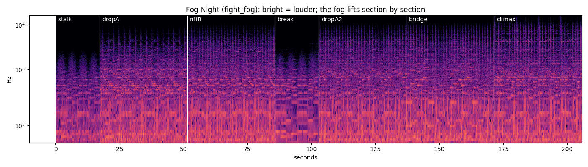

Night 14 is Fog Night. Until now it played night 14's normal fight song. Now it has its own: the same song family, the same parts in the same order, but heard through the fog. At first the band is far off and muffled, with a foghorn and the mist breathing over it. As the fight goes on it gets clearer, part by part, and the last part (climax) is almost clear. Click a part to hear it loop. Click it again to stop. The second row is night 14's normal song, to compare. Your notes go in notes.md.
Brighter means louder; higher up means higher notes. The dark top on the left is the fog cutting the high sounds.
